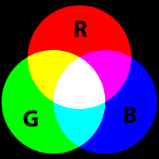

{kind=link}

Los archivos
de fotos se almacenan en lo que se llama un formato "rasterizado"
(Raster). Esto significa que la imagen se compone de un
cuadrículo
de
puntos (en filas y columnas). Esto puntos se llaman píxeles
(pixels),
y contienen el color de ese punto. El número de filas y
columnas
que constituyen la red se llaman dimensiones. Una imagen que
tiene
33
columnas (ancho - width) y 22 filas (altura - height) tiene unas
dimensiones de 33x22, y cuenta con un total de 726 píxeles. En
general
las dimensiones de las imágenes digitales siempre se escriben en forma
de "ancho x altura". (http://en.wikipedia.org/wiki/2D_computer_graphics
&
http://es.wikipedia.org/wiki/Computación_gráfica & http://es.wikipedia.org/wiki/Gráfico_rasterizado
& http://es.wikipedia.org/wiki/Píxel
)

Las cámaras digitales modernas tienen dimensiones mucho, mucho, mas alta. A menudo se describen a base de cuántos milliones de píxeles o "megapíxeles" (megapixels) tienen. Fotos con más píxeles se dice que tienen un mayor "resolución" (Resolution), mientras las fotos con menos píxeles tienen una resolución menor. Algunos ejemplos de las dimensiónes de fotos y su numer de píxeles y megapíxeles son:
640x480 = 307200 pixels = 0.3
megapixels
1024x768 = 786432 pixels = 0.8 megapixels
1280x960 =
1228800 pixels = 1.2 megapixels
1600x1200 = 1920000 pixels = 1.9
megapixels
2842x2136 = 6070512 pixels = 6 megapixels
4000x3000
= 12000000 pixels = 12 megapixels
(http://es.wikipedia.org/wiki/Resolución_de_imagen
& http://es.wikipedia.org/wiki/Relación_de_aspecto
)
Observa que todas estas tienen algo en común: si el primer número se divide entre el segundo número, todos ellos aproximadamente igualan 1.33. La proporción más baja que es igual a 1.33 es 4/3, por lo que este formato de imágenes se dice que tiene una proporción de 4:3.

Este es usualmente el estándar para la fotografía, cuando la cámara se sostiene normalmente - esto también es conocido como una orientación "paisaje" (landscape). Cuando la cámara se gira de lado, esta relación cambia a 3:4 y se llama orientación "retrato". Estudiaremos otras resoluciones en la unidad de video.
La razón por la que las cámaras han aumentado el numero de megapíxeles que utilizan, se debe a que, con todo lo demás siendo igual, mientras mayor sean las dimensionesmejor se ve la imagen, especialmente cuando se imprime. Un buena impresora puede imprimir fotografias a 4800 puntos por pulgada (4800 Dots Per Inch - DPI: http://es.wikipedia.org/wiki/DPI ). En este caso se usan las pulgadas (1in = 2.45cm) y puntos (equivalente a un píxele) como unidades de medida debido a su historia en la industria de impresión.
Esto significa que un imagen de 12 megapíxeles (4000x3000) podria
ser impresos en un imagen de 2.1x1.6cm y cada píxel sería
visible.


Sin embargo, si se imprime a una imagen 4.2x3.2cm, entonces cada
píxel estaría representada por cuatro puntos en papel. Si el
tamaño se
duplica de nuevo a 8.4x6.4 luego cada píxel estaría representada por 16
puntos en el papel. Esto empieza a convertirse en un problema
cuando
se
tiene una imagen de pocos píxeles y se desea imprimir
(o
visualizar en una pantalla) como una imagen de gran tamaño. En
algún
momento, los píxeles individuales se vuelven fácilmente visibles en la
imagen impresa, y puede darle una sensación de bloques y poco
natural.
Las imágenes debajo son la misma porción de una imagen más grande de
una tortuga. La foto en la parte superior es del tamaño completo
de 12
megapixels (4000x3000) de la imagen. La foto en la parte inferior
fue
tomado en una dimensión mucho menor de 640x480. Observe como los
píxeles de la imagen son claramente visibles en la imagen inferior y no
se ve claro.

Como regla general, es importante mantener la mejor imagen posible (con la mayoría de píxeles), por lo menos mientros se trabaja con ella para editar. La sección sobre recorte y cambio de tamaño cubrirá más sobre las ventajas y desventajas de preparar una imagen para imprimir o poner en Internet.
En una fotografía, un píxel puede representar muchos colores
diferentes. Para expresar esto en un computadora, los píxeles se
representan con diferentes "canales" (channels) para los diferentes
colores. Un imagen típica tendrá canales: rojo, verde y azul
(Red,
Green, and Blue - juntos RGB: http://es.wikipedia.org/wiki/Espacio_de_color_RGB
), para las imágenes sin color, tendrán un
solo canal (diferentes tonalidades de gris). Cada canal dice qué
tan
fuerte es el color es, por ejemplo, un píxel que tiene canal rojo muy
fuerte y los canales verde y azul muy débil se mostraría de color
rojo.
Un píxel, donde los tres canales son muy fuertes estaría cerca de
blanco, y donde todos son débiles, cerca de negro.

La siguiente imagen es un ejemplo de píxeles y canales de color. La imagen original es la carita en la esquina superior izquierda. En la version ampliada de la cara, puedes ver los pixeles individuales de la imagen, se disponen en filas y columnas, que conforman la imagen. Luego, en el fondo, se pueden ver tres píxeles aún más ampliados, que componen una pequeña área en la esquina inferior izquierda de la imagen. Este segmento tiene los valores para cada canal -- rojo, verde, y azul -- escritos sobre cada píxel.
En este caso podemos ver que para hacer un color medio gris
ajustamos el canal rojo hasta un 80% de su intensidad, el canal verde
también hasta un 80%, y el canal azul al 77%. Tenga en cuenta que
estos tres están por encima de 50%, por lo que en todos los canales es
bastante luminoso...este color gris es mucho más cerca del color blanco
que del color negro. A continuación, para obtener un color marrón
oscuro, ajustamos los canales rojo y verde a 36% y el canal azul sólo
al
13%. Porque todas estas son mucho menos del 50%, el color general
es
oscuro y cada vez más cerca al negro. Por último, para obtener un color
amarillo, los canales rojo y verde se ajustan casi por completo hacia
arriba (si queremos un "verdadero" color amarillo, los ajustaríamos
completamente hacia arriba) y se deja el canal azul en cero.
En la siguiente página web, practique esta técnica usted mismo ajustando los medidores para las cantidades de rojo, verde, y azul de cada canal, y vea qué colores que puede crear.
http://developer.yahoo.com/yui/examples/slider/slider-rgb_clean.html
Algunos formatos rasterizados también tienen un canal llamado "Alfa" (Alpha), que especifica el brillo del píxel. Si el canal alfa es bajo, entonces sería posible que una imagen colocada detrás de otra imagen se logre ver a través de la imagen superior. Esto se llama transparencia. Si no hay nada detrás de la imagen, el color por lo general suele ser negro.